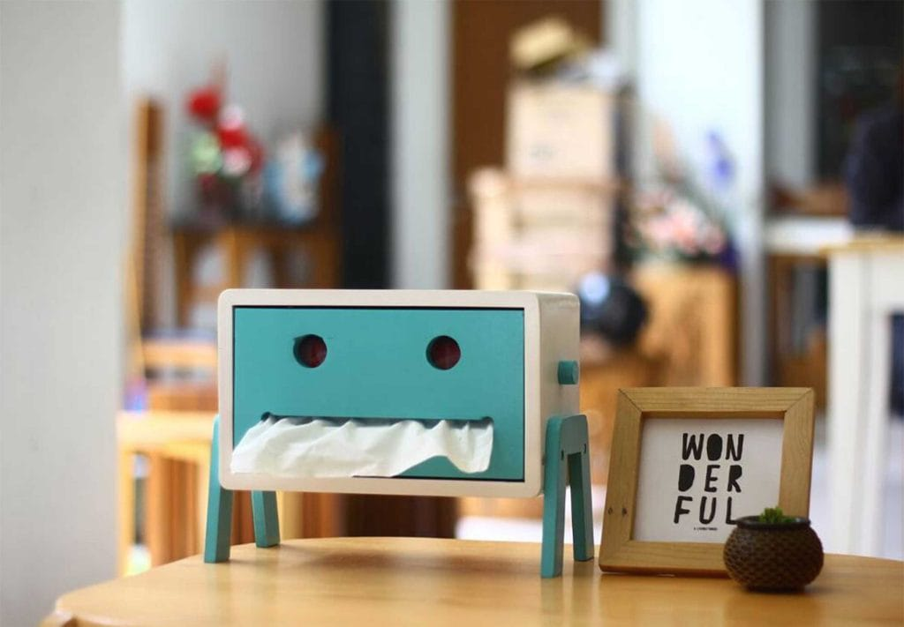

A. Bahan
- Kardus bekas
- Kertas warna atau kertas kado
- Lem kertas
Kardus bekas yang sudah tidak digunakan bisa diubah menjadi tempat tisu yang praktis dan menarik.

| No | Bahan | Harga |
|---|---|---|
| 1 | Kertas warna atau kertas kado | Rp 8.000 |
| 2 | Lem kertas | Rp 5.000 |
| 3 | Cat atau bahan dekorasi | Rp 7.000 |
| 4 | Lapisan pelindung tambahan | Rp 5.000 |
| Total Harga Bahan | Rp 25.000 | |
Perkiraan jual kotak tisu: Rp35.000
Laba (harga jual – harga modal): 35.000 – 25.000 = Rp10.000